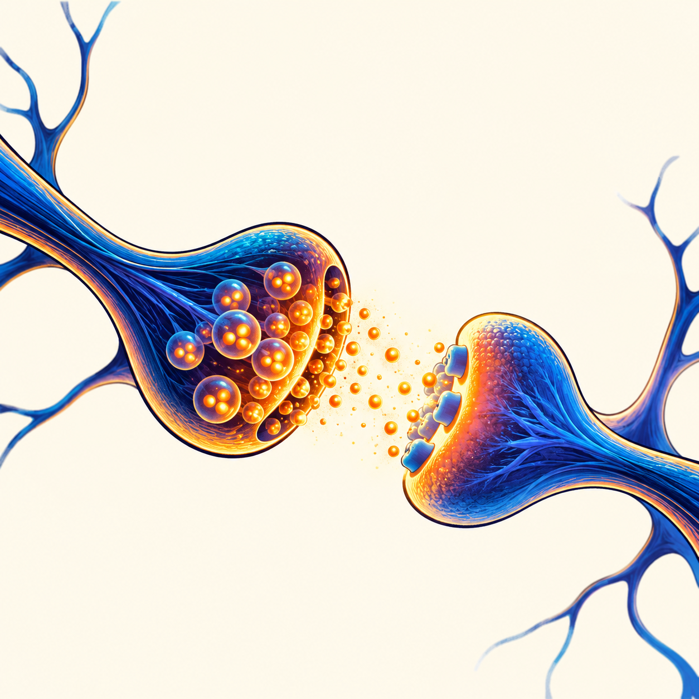

START HERE
Four terms to know
- Gene
- A stretch of DNA with instructions a cell uses to make a working product, often a protein.
- SHANK3 protein
- A scaffold protein that helps organize other components on the receiving side of certain neuron connections. [2]
- Synapse
- A connection where one neuron can signal to another.
- Brain circuit
- Connected neurons and brain regions whose activity researchers can study together.
From gene to synapse
Neurons communicate across tiny gaps. One neuron releases chemical messengers; receptors on another neuron respond. On that receiving side, SHANK3 helps hold signaling and structural proteins in an organized arrangement. SHANK3 is part of the setup, not the message itself. [2]

Each step is a different level of evidence. A mouse’s movement in a task cannot tell us a person’s inner experience.
THE 2026 STUDY
What changed in the mice?
Zhou and colleagues compared Shank3 knockout mice with mice that had the usual gene. The team looked at choices in two contexts: a social versus a nonsocial stimulus, and a female versus a male mouse. The knockout mice showed lower social-over-nonsocial preference in the first context while retaining female-over-male preference in the second. [1]
The researchers also examined activity in the dorsomedial striatum, a region involved in selecting actions, and input from the anterior cingulate cortex. Inhibiting that input impaired the measured preference; activating it in knockout mice shifted brain activity patterns and improved the task measure. That intervention makes a circuit contribution more plausible than imaging alone, within this mouse model and these tasks. [1]
The finding in one sentence
An ACC-to-striatum pathway influenced how Shank3 knockout mice responded in different social choice tasks. [1]
HOW THIS FITS
The 2026 study builds on earlier mouse research
Researchers linked Shank3 deletion to differences in striatal synapses and measured behaviors in one mouse model. [7]
Restoring Shank3 in adult mutant mice improved some measures, but not others. This was a mouse experiment, not a human treatment. [8]
A separate mouse study examined anterior cingulate cortex function and social-task behavior. [9]
The new study focuses more closely on input from that cortex to the dorsomedial striatum across two choice contexts. [1]
HUMAN EVIDENCE
What do we know from people?
Pathogenic changes involving SHANK3 can cause SHANK3-related Phelan–McDermid syndrome. Some people have a variant within SHANK3; others have a larger deletion on chromosome 22 that also removes neighboring genes. The condition and people’s needs vary. This is one genetic route among many associated with neurodevelopmental differences, not a single explanation for autism. [3] [4]
Human studies describe genetic and clinical variation, and one longitudinal study followed adaptive skills over two years. Those studies offer important human context; they do not test the ACC-to-striatum mechanism from the mouse experiment. [4] [5]
Where the evidence stops
What this study cannot tell us
- It cannot reveal whether an autistic person wants more or less social connection. The mouse task measured behavior, not subjective experience.
- It cannot show that changing this circuit treats autism. The pathway manipulation was experimental work in mice.
- It cannot stand in for the full range of human SHANK3 variants, development, and environments.
The study’s reporting summary says no human participants were studied. Baseline behavior included male and female mice, while later experiments used males. The central two-photon comparison involved seven knockout and seven comparison mice. Some molecular analyses had limited independent biological replication. These details matter when judging how far to generalize the results. [6]
FOLLOW THE EVIDENCE
Read the research
- Zhou Y, Xiao H, Feng D, et al. (2026). “Anterior cingulate input tunes striatal dynamics for context-dependent social preference in a mouse model of autism.” Nature Communications. Original study ↗
- NCBI Gene. SHANK3, human gene 85358. Gene record ↗
- Phelan K, Rogers RC, Boccuto L. Phelan-McDermid Syndrome-SHANK3 Related. GeneReviews. Clinical reference ↗
- De Rubeis S, Siper PM, Durkin A, et al. (2018). “Delineation of the genetic and clinical spectrum of Phelan-McDermid syndrome caused by SHANK3 point mutations.” Human study ↗
- Srivastava S, Johnson K, Farmer C, et al. (2025). “Longitudinal Trajectory of Adaptive Skills in Phelan-McDermid Syndrome.” Human longitudinal study ↗
- Zhou et al. (2026). Reporting summary. Study page and additional files ↗
- Peça J, Feliciano C, Ting JT, et al. (2011). “Shank3 mutant mice display autistic-like behaviours and striatal dysfunction.” Earlier striatal mouse study ↗
- Mei Y, Monteiro P, Zhou Y, et al. (2016). “Adult restoration of Shank3 expression rescues selective autistic-like phenotypes.” Adult restoration mouse study ↗
- Guo B, Chen J, Chen Q, et al. (2019). “Anterior cingulate cortex dysfunction underlies social deficits in Shank3 mutant mice.” Earlier cortex mouse study ↗
The 2026 article was released as an early peer-reviewed accepted version. The publisher says it may receive further edits.